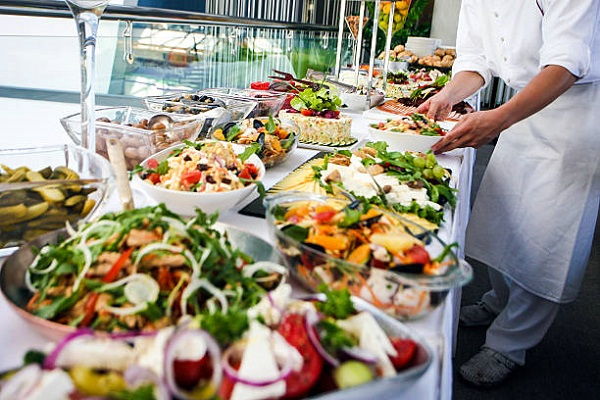

Catering
The Temple Inn & Suites group of venues has partnered with some of the country's best external caterers, who will go out of their way to make sure your event has unforgettable catering.
Accomadation & Services
Glass Marquee
Striking and elegant are only a few of the words one could use to describe the Glass Marquee. The marbled floors, stone pillars and chandeliers which not only add a sense of opulence and timelessness to your wedding day, but also create the perfect backdrop to let your imagination run wild and your dreams come alive.
It’s up to you if you choose this space to say your vows while your friends and family watch on or as your reception space where you sit down to a decadent dinner served by impeccable waitrons, as your guests take in the changing sky of the sunset. Either way this is a magical and enchanting space that is awe inspiring. Flowers and fairy lights can be gorgeously draped from the ceiling and for an even more romantic atmosphere you can add side and roof draping.
The Grand Hall
The Grand Hall is covered with glittering fairy lights creating the perfect enchanting space where your guests will be easily captivated. The wooden floors, pillars and mirrors take you back in time to the era of dances in grand halls. Should you have a small intimate wedding it’s your choice how you decide to use The Grand Hall. Have your beautiful reception and dancing behind these walls or just use it to dance the night away with the people who mean the most to you. The Library next door is perfect for a cozy lounge or to display your mouth-watering desserts. The options really are endless.
The Natural Arch
Our lovely natural arch can be found at the foot of our mountain and is the ideal setting to say “I Do” if you are looking for an outdoor ceremony. The Natural Arch is at the heart of Shepstone Gardens and right next door to our functioning ‘old-worldly’ bell tower. The Jo'burg skyline as a backdrop creates the perfect juxtaposition between city and garden wedding. After your vows why not turn the arch into a outdoor champagne or gin & tonic bar? Your guests will love relaxing and sipping cocktails as they watch the sunset over the skyline.